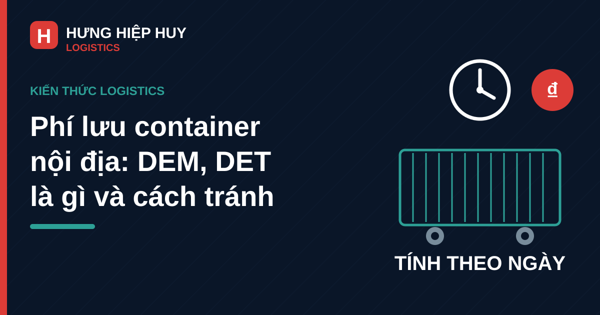

Phí lưu container nội địa: DEM, DET là gì, cách tính và cách tránh

Container đã về cảng, nhưng kho chưa sẵn sàng nhận hàng. Xe đến nơi thì thủ tục chưa xong, dỡ hàng kéo sang ngày hôm sau, trả vỏ rỗng thì depot đã đóng cửa. Mỗi ngày chậm trễ đó đều có thể biến thành phí lưu container — khoản phát sinh mà nhiều chủ hàng chỉ biết đến khi nhận hóa đơn, có khi lên tới vài triệu đồng cho một container.
Bài viết này giải thích phí lưu container nội địa gồm những khoản nào, cách tính ra sao, và làm thế nào để tránh nó, với các tình huống thực tế trên tuyến vận chuyển container từ cảng Đà Nẵng đi các tỉnh.
1. Phí lưu container là gì? Phân biệt DEM, DET và phí lưu bãi
Trong vận chuyển container, "phí lưu container" là cách gọi chung cho ba khoản phí khác nhau, do các bên khác nhau thu. Phân biệt được ba khoản này là bước đầu tiên để biết mình phải trả cho ai, và xin giảm phí với bên nào.
| Khoản phí | Tên đầy đủ | Thu khi nào | Bên thu |
|---|---|---|---|
| DEM (Demurrage) | Phí lưu container tại cảng/bãi | Container nằm tại cảng hoặc depot quá thời gian miễn phí, chưa được lấy ra khỏi cảng | Hãng tàu (thông qua đại lý) |
| DET (Detention) | Phí giữ container ngoài cảng | Khách hàng giữ container tại kho để dỡ hàng hoặc đóng hàng quá thời gian miễn phí, trả vỏ rỗng muộn | Hãng tàu |
| Storage (phí lưu bãi) | Phí lưu bãi | Container nằm tại bãi cảng quá số ngày miễn phí của cảng | Cảng hoặc đơn vị khai thác bãi |
Nói đơn giản: DEM tính cho thời gian container "ngủ" trong cảng, DET tính cho thời gian container "ngủ" ngoài cảng tại kho của khách hàng, còn phí lưu bãi là tiền thuê chỗ đỗ mà cảng thu riêng. Một lô hàng chậm trễ có thể phát sinh cả DEM lẫn DET cùng lúc, vì vậy tổng phí thường cao hơn con số chủ hàng dự tính ban đầu.
Ngoài ba khoản trên còn có phí lưu xe — tiền xe đầu kéo chờ tại cảng hoặc tại kho quá thời gian bốc dỡ thỏa thuận, do nhà vận chuyển thu riêng theo ca hoặc ngày chờ, không nằm trong biểu phí của hãng tàu. Khi báo giá, chủ hàng nên hỏi rõ nhà xe về khoản này, như kinh nghiệm chọn nhà vận chuyển đã nêu trong bài viết về thuê xe đầu kéo container nội địa.
Người chịu phí lưu container phụ thuộc vào điều kiện giao hàng và thỏa thuận trong booking, không phải lúc nào cũng là người thuê xe. Vì vậy, trước mỗi lô hàng, các bên nên thống nhất bằng văn bản ai chịu phí lưu nếu hàng chậm.
2. Free time: thời gian miễn phí được tính từ khi nào?
Free time là số ngày khách hàng được giữ container miễn phí, không tính DEM hay DET. Chỉ khi vượt quá free time, phí mới bắt đầu tính theo từng ngày (thường tính theo ngày lịch, bao gồm cả thứ Bảy, Chủ nhật và ngày lễ, trừ khi có thỏa thuận khác).
Cách tính free time khác nhau giữa chiều hàng nhập và chiều hàng xuất:
- Hàng nhập (container về cảng, giao cho khách): DEM tính từ ngày container dỡ xuống bãi cảng đến ngày container ra khỏi cổng cảng. DET tính từ ngày container ra khỏi cảng đến ngày vỏ rỗng trả về đúng depot hãng tàu chỉ định.
- Hàng xuất (khách lấy vỏ rỗng về đóng hàng): DET tính từ ngày lấy vỏ rỗng khỏi depot đến ngày container hàng hạ về bãi cảng đúng hạn closing time.
Mức free time không có con số chung cho mọi lô hàng. Mức phổ biến thường gặp là khoảng 5–7 ngày cho container khô hàng nhập, ngắn hơn cho container lạnh, nhưng con số chính xác phụ thuộc vào hãng tàu, loại container, cảng dỡ hàng và mùa cao điểm. Với container lạnh, free time thường ngắn hơn vì container lạnh chiếm chỗ cắm điện tại bãi — xem thêm trong bài viết về vận chuyển container lạnh nội địa.
3. Cách tính phí lưu container: ví dụ minh họa cụ thể
Phí lưu container thường tính theo bậc thang: càng để lâu, mức phí mỗi ngày càng cao, nhằm khuyến khích khách hàng trả container sớm để hãng tàu xoay vòng vỏ.
Ví dụ minh họa (con số chỉ để minh họa cách tính, không phải biểu phí chính thức của bất kỳ hãng tàu hay cảng nào — biểu phí thực tế phải đối chiếu theo từng lô hàng):
Giả sử một container 40ft hàng nhập có free time 7 ngày, biểu phí DEM giả định là 300.000 đồng/ngày cho 5 ngày đầu vượt quá free time, và 600.000 đồng/ngày từ ngày vượt thứ 6 trở đi. Nếu lấy container ra khỏi cảng muộn 4 ngày so với free time, phí DEM là 4 × 300.000 = 1.200.000 đồng. Nếu chậm tới ngày thứ 8, tổng phí DEM là 5 × 300.000 + 3 × 600.000 = 3.300.000 đồng.
Lưu ý, phí tính theo từng container, theo từng ngày — một lô 3 container chậm 4 ngày chịu phí gấp 3 lần một container. Container 40ft thường có mức phí cao hơn 20ft, container lạnh cao hơn container khô vì còn phát sinh phí cắm điện tại bãi. DEM, DET, phí lưu bãi và phí lưu xe (nếu có) là các khoản riêng biệt, có thể phát sinh đồng thời trên cùng một lô hàng chậm. Vì vậy, khi nhận báo giá, chủ hàng nên hỏi rõ cách tính cước vận chuyển container và các yếu tố ảnh hưởng đến chi phí để tách bạch phí lưu ngay từ đầu, thay vì gộp chung vào giá cước rồi tranh luận sau.
4. 7 tình huống thường làm phát sinh phí lưu container nội địa
Hầu hết phí lưu container không đến từ một sự cố lớn, mà từ những chậm trễ nhỏ cộng dồn qua nhiều khâu. Dưới đây là 7 tình huống gặp nhiều nhất trên tuyến nội địa:
- Đặt xe muộn so với ngày hàng về cảng. Container đã dỡ xuống bãi nhưng xe chưa được đặt, hoặc lịch xe kín, khiến container nằm chờ trong cảng qua hết free time.
- Kho chưa sẵn sàng nhận hàng. Kho đang đầy, hoặc nhân công và xe nâng chưa bố trí kịp, xe đến nơi phải chờ sang hôm sau mới dỡ được.
- Thiếu hoặc sai giấy tờ. Lệnh giao hàng (EDO) chưa có, thông tin trên giấy tờ không khớp, hoặc thủ tục hải quan chưa hoàn tất khiến xe không lấy được container ra khỏi cảng.
- Hàng bị kiểm hóa hoặc kiểm tra chuyên ngành. Thời gian kiểm tra kéo dài ngoài dự kiến, container phải nằm lại cảng trong khi free time vẫn chạy.
- Trả vỏ rỗng muộn hoặc sai depot. Dỡ hàng xong nhưng không trả rỗng ngay, hoặc trả về depot khác với depot hãng tàu chỉ định, khiến DET tiếp tục tính đến khi vỏ được ghi nhận đúng nơi.
- Lấy vỏ rỗng xuất khẩu quá sớm. Lấy rỗng về đóng hàng từ nhiều ngày trước, nhưng hàng chưa đủ hoặc lịch hạ bãi thay đổi, DET tính từ ngày lấy rỗng chứ không tính từ ngày đóng hàng xong.
- Mùa cao điểm, tắc cảng và thời tiết xấu. Trước Tết, mùa xuất khẩu cao điểm, hoặc mưa bão ở miền Trung làm lịch tàu, lịch xe và lịch dỡ hàng dồn lại, free time hết trước khi các bên kịp xoay xở.
5. Cách tránh phí lưu container: checklist trước, trong và sau khi vận chuyển
Trước khi đặt xe: chốt 4 thông tin bằng văn bản
- Xác nhận free time và biểu phí của lô hàng: hỏi rõ số ngày miễn phí, mức phí từng bậc và depot trả rỗng chỉ định, lưu lại bằng văn bản hoặc email.
- Chốt lịch dỡ hàng tại kho trước khi đặt xe: đảm bảo kho trống, đủ nhân công và phương tiện, và người nhận hàng có mặt đúng giờ xe đến.
- Chuẩn bị đủ giấy tờ trước ngày hàng về: EDO, giấy tờ hải quan (nếu có), thông tin người nhận hàng và biển số xe, để xe đến cảng là lấy được hàng ngay.
- Đặt xe sát với ngày hàng về: đặt quá sớm dễ phát sinh phí lưu xe chờ, đặt quá muộn thì container nằm cảng chờ xe.
Khi hàng về cảng: lấy hàng càng sớm càng tốt
Theo dõi arrival notice từ hãng tàu hoặc đại lý, và lấy container ra khỏi cảng ngay khi đủ điều kiện, thay vì đợi gần hết free time mới xử lý. Với hàng nhập từ cảng Đà Nẵng đi các tỉnh, đặt xe từ trước ngày tàu cập cảng giúp rút ngắn thời gian container nằm bãi — xem quy trình vận chuyển container nội địa từ cảng Đà Nẵng đi các tỉnh. Riêng container lạnh cần ưu tiên lấy sớm nhất, vì vừa tốn phí cắm điện vừa có free time ngắn hơn.
Khi giao nhận tại kho: dỡ nhanh, trả rỗng đúng nơi
Dỡ hàng ngay trong ngày xe đến, kiểm đếm nhanh và ký biên bản giao nhận đầy đủ để làm căn cứ nếu có tranh chấp về thời gian. Sau khi dỡ xong, trả vỏ rỗng về đúng depot hãng tàu chỉ định trong ngày, và giữ lại phiếu trả rỗng ghi rõ ngày giờ trả.
6. Khi đã phát sinh phí: xử lý thế nào để giảm thiệt hại?
Nếu phí đã phát sinh, vẫn có cách giảm thiệt hại thay vì chấp nhận toàn bộ hóa đơn:
- Kiểm tra lại cách tính free time: đối chiếu ngày bắt đầu và ngày kết thúc trên arrival notice, EDO và phiếu trả rỗng. Sai sót về ngày là căn cứ để yêu cầu tính lại.
- Xin gia hạn free time trước khi hết hạn, đừng đợi phí phát sinh rồi mới xin: hãng tàu có thể chấp thuận gia hạn thêm vài ngày nếu đề nghị sớm và có lý do chính đáng, chẳng hạn hàng kiểm hóa hoặc cảng tắc nghẽn.
- Thương lượng và phân định trách nhiệm: nếu chậm trễ do lỗi của một bên cụ thể, hãy tập hợp chứng từ (email, biên bản, hình ảnh) và làm việc với bên đó về phần phí tương ứng.
- Rút kinh nghiệm cho lô sau: ghi lại nguyên nhân chậm trễ vào checklist đặt xe cho lô tiếp theo, vì phí lưu container lặp lại qua nhiều lô sẽ thành khoản chi phí thường xuyên không nhỏ.
7. Kết luận
Phí lưu container nội địa không phải khoản phí "tự nhiên phải chịu" — phần lớn trường hợp đều có thể tránh được nếu chủ hàng nắm rõ free time của lô hàng, chốt lịch dỡ hàng trước khi đặt xe, và trả vỏ rỗng đúng nơi, đúng hạn. Chi phí của một ngày chậm trễ luôn rẻ hơn rất nhiều so với việc để container nằm chờ qua nhiều ngày, nhất là khi phí tính theo bậc thang và cộng dồn trên nhiều container.
Nếu doanh nghiệp của bạn thường xuyên vận chuyển container từ cảng Đà Nẵng đi các tỉnh và muốn lên lịch xe sát ngày hàng về để hạn chế phí lưu container, hãy liên hệ Hưng Hiệp Huy Logistics để được tư vấn và báo giá cho lô hàng cụ thể:
Cần tư vấn lịch xe sát ngày hàng về để hạn chế phí lưu container?
Liên hệ Hưng Hiệp Huy Logistics — Hotline/Zalo: 0901 995 665 — Email: hiepnguyen.hunghiephuy@gmail.com — Địa chỉ: 756 Ngô Quyền, Đà Nẵng. Xem thêm các dịch vụ vận chuyển của chúng tôi.
Bài viết liên quan: Thuê xe đầu kéo container nội địa: kinh nghiệm chọn nhà vận chuyển · Vận chuyển container lạnh nội địa: nhiệt độ, quy trình, chi phí · Cước vận chuyển container nội địa: cách tính và các yếu tố ảnh hưởng · Vận chuyển container nội địa từ cảng Đà Nẵng đi các tỉnh: quy trình và lưu ý